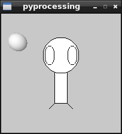

Pyproceessing: Un ambiente para crear gráficos con Python
Posted on lun 24 diciembre 2012 in Tutorial Python • 1 min read
Pyprocessing es un paquete python que permite crear gráficos que se basa en las librerías OpenGL y Pyglet. El proyecto se aloja en google code.
En la documentación encontrarán la guía de referencia rápida, un tutorial básico, un tutorial más completo y las instrucciones de uso.
Para instalarlo en linux se usa easy_install o pip:
easy_install pyprocessing
pip install pyprocessing
El ejemplo que se hará es el de crear con rectangulo, líneas y elipses una especie de muñeco sin brazos junto a una pequeña esfera. Este ejemplo se basa en el pequeño ejemplo que tiene el proyecto en la página de entrada.
El código se muestra a continuación:
#!/usr/bin/env python
# -*- coding: utf-8 -*-
#Se importa pyprocessing
from pyprocessing import *
#define el tamaño de la ventana.
size(200,200)
#Define un rectangulo en el centro de la ventana
rectMode(CENTER)
#Se crea el rectangulo(x,y,ancho,alto)
rect(100,100,20,100)
#Se crean 3 elipses(x,y,ancho,alto)
ellipse(100,70,60,60)
ellipse(81,70,16,32)
ellipse(119,70,16,32)
#Se crean 2 lineas(x1,y1,x2,y2)
line(90,150,80,160)
line(110,150,120,160)
#No se crea bordes en la figura
noStroke();
#Define que tendrá luz la esfera
lights();
#Define la cantidad de desplazamiento con respecto a la ventana.
#(derecha/izquierda,arriba/abajo,delante/detrás)
translate(28, 48, 0);
#Se crea una esfera con radio 15
sphere(15)
#Se muestra en la ventana.
run()
La siguiente figura muestra el resultado del código al ser ejecutado:

¡Haz tu donativo! Si te gustó el artículo puedes realizar un donativo con Bitcoin (BTC) usando la billetera digital de tu preferencia a la siguiente dirección: 17MtNybhdkA9GV3UNS6BTwPcuhjXoPrSzV
O Escaneando el código QR desde la billetera: